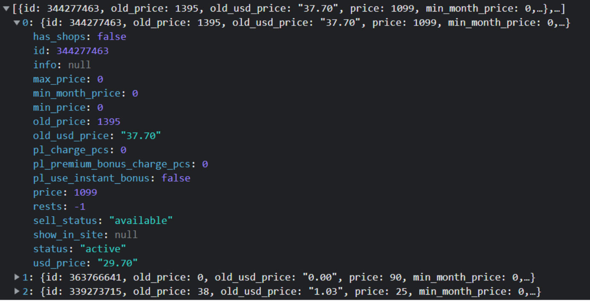

-
Task 1
Описати масив об’єктів – сайтів розроблених компанією з такими
властивостями
----- Властивості ------
- назва компанії на час розробки (назву періодично змінюють)
- власник компанії
-
споснсори (масив спонсорів)
- прізвище спонсора
- ім’я спонсора
- сума вкладень спонсора
- рік випуску
- вартість сайту
Знайти:
- загальну вартість усіх сайтів
- кількість сайтів, що було зроблено між 2000 та 2009 рр.
-
кількість сайтів, де сума спонсорських вкладень була більшою за 100000
-
створити загальний список усіх спонсорів (поки можуть повторюватись,
просто зібрати усі у масив)
- знайти рік, коли прибуток був найбільшим
- упорядкувати список за спаданням прибутку
-
Створити 2 окремих списки з копіями об’єктів, що містять сайти з
вартість до 10000 і більше 10000
-
Task 2
Задача 2.
Розробити функцію, у яку передають об’єкт (день, місяць, рік).
Визначити, який буде рік через N місяців.
-
Task 3
Задача 3.
Ось приклад відповіді з одного з сайтів (масив об’єктів з інформацією
про товари)

(весь текст масиву, що в кінці документу скопіюєте в код).
- Загальну вартість (нові ціни - price)
-
Знайти кількість товарів, у яких ціна зменшилась
(price < old_price)
.
- Товари, які доступні (sell_status:"available")
-
сформувати новий список об”єктів тільки доступних для продажу
товарів, які міститимуть тільки ідентифікатор товару (id), нову ціну
(price), стару ціну (old_price), та ціну у доларах (usd_price)